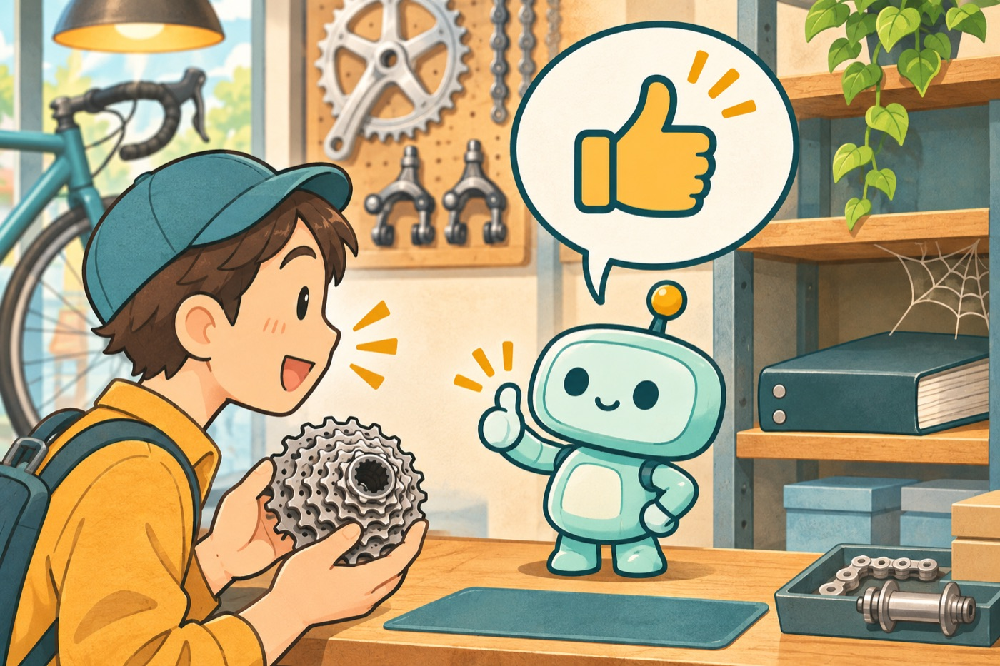
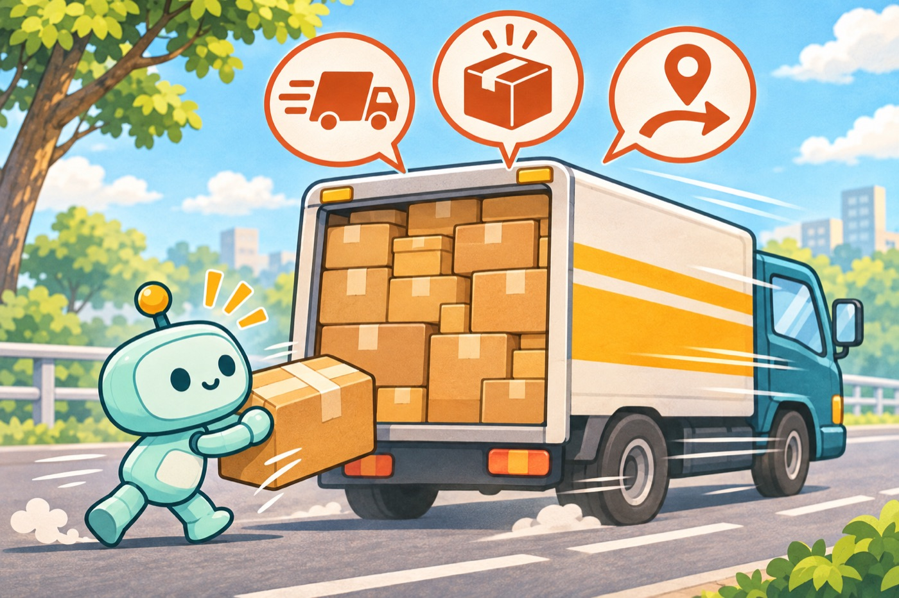
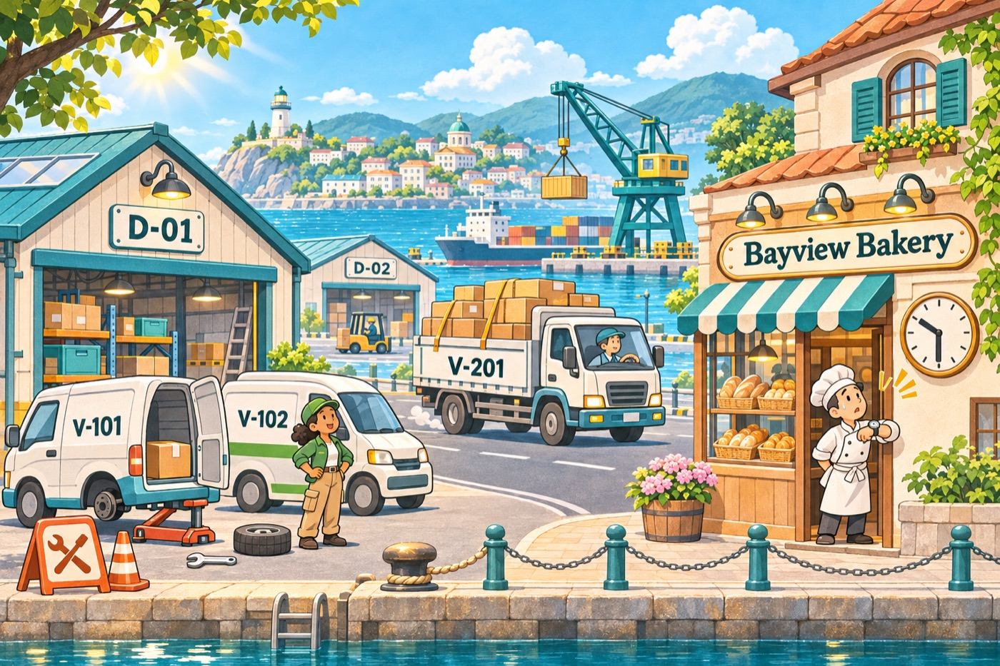
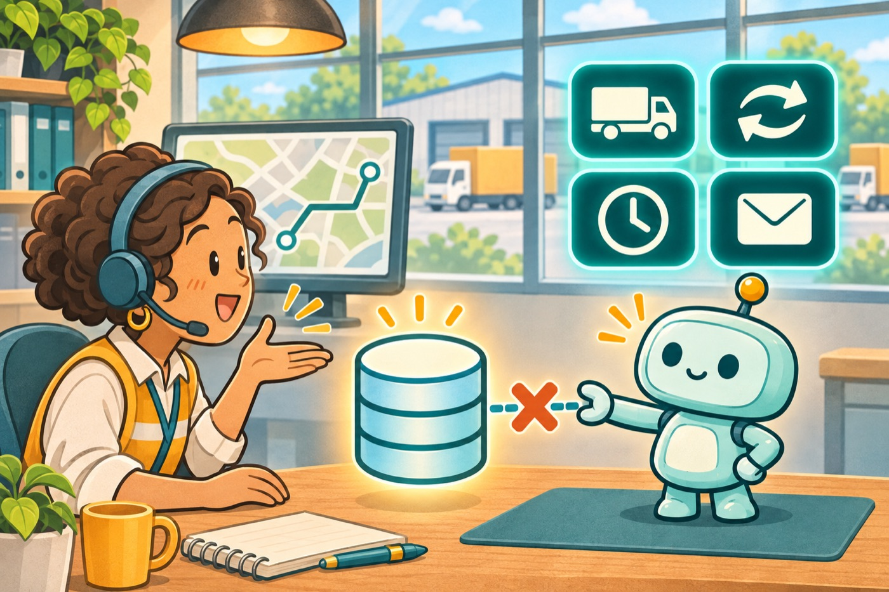
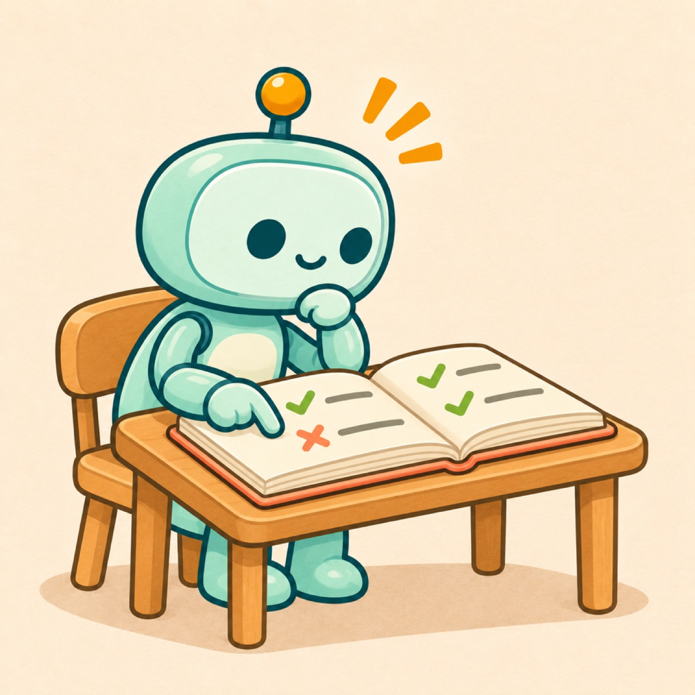
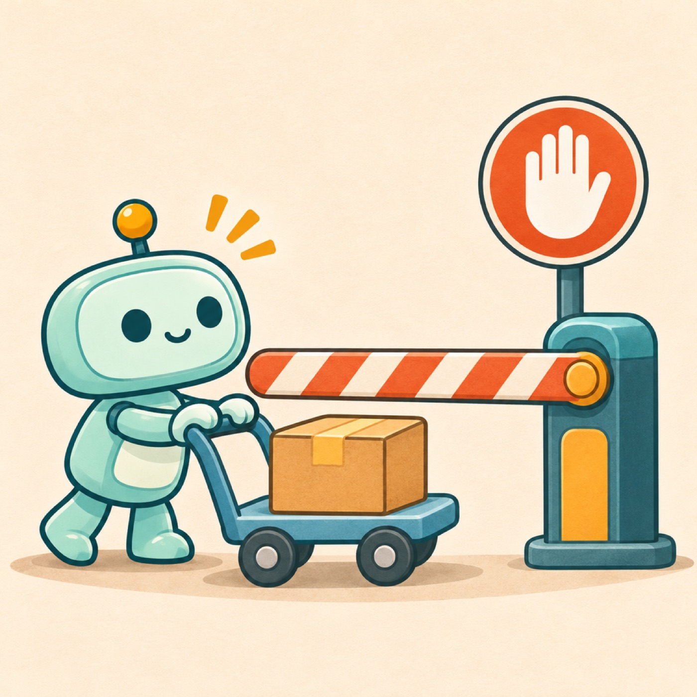
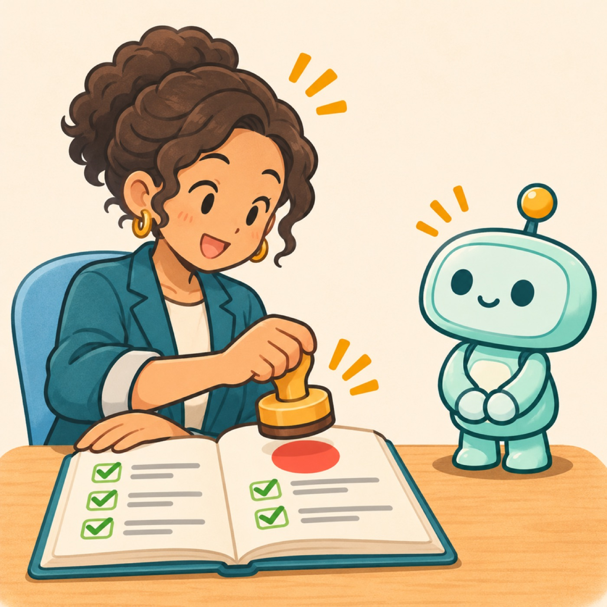
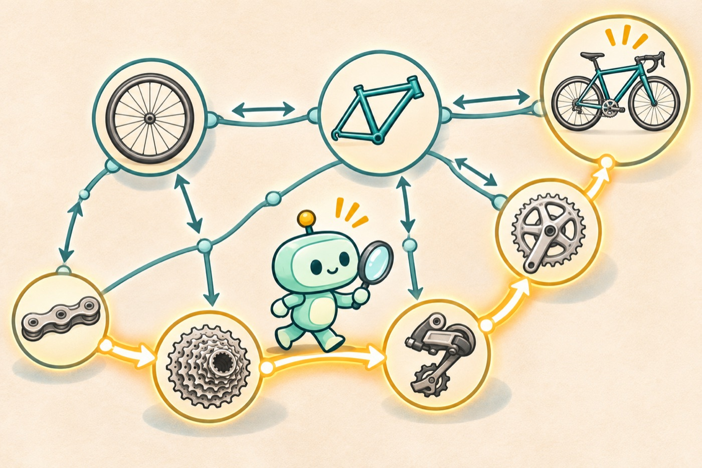

チュートリアル8と9では、Claude Code に実際の作業をさせます。8では配送データを書き換え、9では部品カタログをもとに質問に答えます。このページでは、動画を見る前に知っておきたい前提、場面の状況、解決したい課題を図で説明します。
8と9は、同じ問題を別の側から解きます。
LLM は文章を書くのが得意です。ただ、仕事で使うと2つの問題にぶつかります。

それらしい答えが返ってきますが、根拠はモデルの記憶です。自社の部品カタログに何が書いてあるかは知りません。

トラックの上の3つの札は「走行中」「満載」「別の拠点」です。
データを書き換える道具を渡すと、エージェントは業務のルールを知らないまま実行します。V-201 は走行中で、荷台にも空きがないかもしれません。
どちらも、LLM が自分の外にある正しい情報を持っていないことが原因です。そこで、会社の知識をオントロジーとして書き、エージェントに渡します。オントロジーは「何があり、どうつながり、何をしてよいか」を、機械が読める形で書いたものです。
考え方はチュートリアル6、実際に動かすのがチュートリアル8です。
考え方はチュートリアル7、実際に動かすのがチュートリアル9です。
どちらのチュートリアルでも、エージェント役は Claude Code です。ターミナルで動く AI で、ファイルを読み、許可された道具（ツールやコマンド）を使って作業します。道具を使う前にはあなたの許可を求めるので、何をしようとしているかを毎回確かめられます。
Object Ontology × MCP サーバー × Claude Code
架空の配送会社「Harbor City Delivery Ops」です。拠点が2つあり、車両が3台あります。パン屋「Bayview Bakery」宛ての出荷 S-5001（120 kg）は、11時に届ける約束でした。ところが、積まれている車両 V-101 が整備に入ってしまい、出荷は遅延になっています。

データはオントロジーのファイル delivery-ops.oont.yaml に書かれています。時刻は 2026-05-12 10:30 に固定してあります。

「S-5001 が遅れている。直して、お客さんにも伝えて」とエージェントに頼みたい。ただし次のことは困ります。
MCP（Model Context Protocol）は、AI に道具を渡すための共通の接続方法です。Claude Code は MCP サーバーが公開したツールを呼べるようになります。
オントロジーには、assignVehicle（車両に割り当てる）の実行条件が3つ書かれています。3台を当てはめると、次のとおりです。
| 実行条件 | V-101 | V-102 | V-201 |
|---|---|---|---|
| 車両が空いている 走行中・整備中ではない | ✗整備中 | ✓空き | ✗走行中 |
| 荷物が残りの容量に収まる 積載 + 120 kg ≦ 定員 | ✓240 ≦ 800 | ✓470 ≦ 1,000 | ✗3,020 > 3,000 |
| 出荷の出発地の拠点にいる S-5001 は D-01 から | ✓D-01 | ✓D-01 | ✗D-02 |
| 結果 | 拒否 | OK | 拒否（3つとも） |
動画の前半では、エージェントが V-102 を選びます。後半では V-201 を頼まれて断り、それでも呼ばせるとサーバーがこの3つの理由で拒否します。

実行条件はツールの説明文に入っているので、モデルは呼ぶ前に読めます。動画では、V-201 の3つの問題を挙げて断り、V-102 を提案します。

モデルが判断を誤っても、サーバーが条件をすべて確認します。満たさない条件をまとめて返し、データは何も変えません。

書き込みは実行前に毎回あなたが承認します。適用も拒否も、すべて監査ログに残ります。
モデルはたいてい正しく判断します。それでも、確実に止めるのはサーバーの役目です。
assignVehicle の実行条件に追加ルールが黙って抜け落ちたまま、エージェントが動くことはありません。
npm install と npm test。11件のテストが通れば準備完了です。Semantic Web × SPARQL × Claude Code
架空の部品カタログ（product-compatibility.ttl）です。どの部品がどれと互換か、どの部品が何に含まれるかが、3つ組の事実として書かれています。お客さんから「12速のカセットは、いま使っている11速のチェーンに合いますか？」という質問が来ました。
矢印は、ファイルに書かれた向きです。compatibleWith は「対称」（A が B と互換なら B も A と互換）と定義されていますが、ファイルには片方向しか書かれていません。
CLAUDE.md のルールとして渡す
npm run sparql は、ビューワーの SPARQL パネルと同じエンジン（Comunica）を使います。だから、パネルに貼れば同じ行が返り、該当する部品が図の上で光ります。
このサンプルには推論器がありません。推論器は、「対称」「推移的」といった定義から、書かれていない事実を自動で補う仕組みです。それがないので、クエリの側で補う必要があります。
「A は B と互換」は片方向しか書かれていないことがあります。{A 互換 B} UNION {B 互換 A} のように、両方向を調べます。
+ を付けてたどる
「チェーンはキットの一部、キットは自転車の一部」なら、チェーンも自転車の一部です。:partOf+ のように + を付けないと、直接の部品しか見つかりません。
ASK の false は「互換でない」ではなく「カタログに書かれていない」という意味です。言い切らずに、書かれている事実を伝えます。
SELECT ?part WHERE { ?part (:partOf|^:hasPart)+ :trailBike }
黄色の枠が、クエリで見つかる部品です。+ を付けると、キットの中の部品までたどって7件すべて見つかります。動画の最後で Claude Code が書くのは、このクエリです。
npm test で7件のテストが通れば準備完了です。false が返るのを見ます。+ の有無で7件と3件が入れ替わります。字幕と同じ区切りです。バーの長さは実際の時間に比例しています。
CLAUDE.md のルールを読み込みます。+ が付いていて、7件見つかることを確かめてください。Claude Code の言い回しは実行のたびに少し変わります。見るべきなのは、どのツールやクエリを使ったかと、サーバーやコマンドが何を返したかです。こちらは毎回同じです。
動画やチュートリアルで出てくる言葉
.oont.yaml ファイルです。assignVehicle（車両に割り当てる）。validations。state.json に入ります。.ttl）。ASK は true/false、SELECT は表を返します。